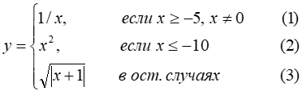

<!DOCTYPE html>

<html lang="en" xmlns="http://www.w3.org/1999/xhtml">
<head>
    <meta charset="utf-8" >
    <title>Лабораторная работа 1 Задание 2</title>
</head>

<body>
    <script>
        // Вводим исходные данные
        var x = Number(prompt("Введите значение x"));

        if (x >= -5 && x != 0) {
            var y = 1 / x;
        }
        else if (x <= -10) {
            var y = Math.pow(x, 2);
        }
        else {
            var y = Math.sqrt(Math.abs(x + 1)); 
        }

        // Отображаем результаты
        document.write("Задание: вычислить значение функции y по формуле:<br>");
        document.write(" <br>");        
        document.write("Результат: y = " + y + "<br>");
        document.write("Разработчик скрипта: Руденко Максим Андреевич");
    </script>
      
</body>
</html>